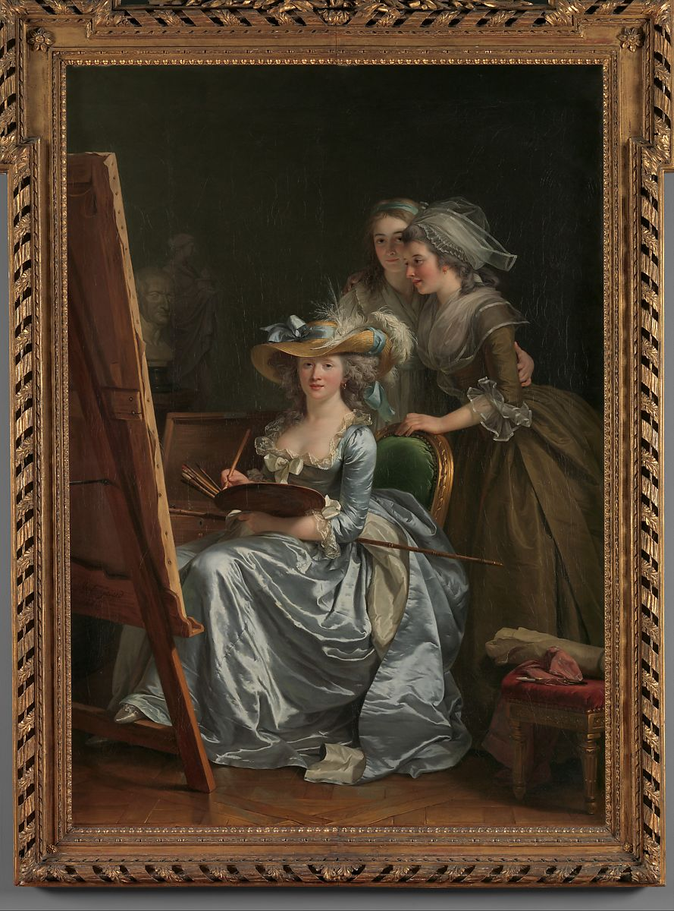

<head>
<meta charset="UTF-8" />
<meta name="keywords" content="drawing, painting" />
<meta name="description" content="drawings by Sunjy" />
<title>Sunjy</title>
<link rel="shortcut icon" type="image/x-icon" href="../../mImages/mCommon/favicon.ico" media="screen" />
<link rel="stylesheet" type="text/css" href="../../mCsses/mCommon/mCssA.css" />
<link rel="stylesheet" type="text/css" href="../../mCsses/mCommon/mCssB.css" />
<link rel="stylesheet" type="text/css" href="../../mCsses/mCommon/mCssC.css" />
<link rel="stylesheet" type="text/css" href="../../mCsses/mCommon/mCssD.css" />
<link rel="stylesheet" type="text/css" href="../../mCsses/mContent/mCssA.css" />
<link rel="stylesheet" type="text/css" href="../../mCsses/mContent/mCssB.css" />
<link rel="stylesheet" type="text/css" href="../../mCsses/mContent/mCssC.css" />
<link rel="stylesheet" type="text/css" href="../../mCsses/mContent/mCssD.css" />
</head>
<script type="text/javascript" src="../../mScripts/mContent/mContentAA.js" /></script>
<script type="text/javascript" src="../../mScripts/mContent/mContentAB.js" /></script>
<script type="text/javascript" src="../../mScripts/mContent/mContentAC.js" /></script>
<script type="text/javascript" src="../../mScripts/mContent/mContentAD.js" /></script>
<script type="text/javascript"></script> 
<script type="text/javascript">
document.write('<div class="mImgAbsolute"></div>');
/*
document.write('<p class="mFontSizeBColor" />From a white paper...</p>');
document.write('<table class="center"><tr><td>');
document.write('');
document.write('</td></tr></table>');
*/
</script>


<script type="text/javascript">
document.write('<p class="mFontSizeBColor" />Self-Portrait with Two Pupils, Marie Gabrielle Capet and Marie Marguerite Carreaux de Rosemond</p>');
document.write('<p class="mFontSizeSColor" />By Adelaide Labille-Guiard, 1785. Labille-Guiard’s self-portrait with her students Marie Gabrielle Capet and Marguerite Carreaux de Rosemont is one of the most remarkable images of women’s art education in early modern Europe. In 1783, when Labille-Guiard and Elisabeth Vigée Le Brun were admitted to the Académie Royale, the number of women artists eligible for membership was limited to four. This canvas, shown with great success at the Salon of 1785, has been interpreted as a means of advocating their cause. As in most eighteenth-century artists’ self-portraits, Labille-Guiard depicted herself in impractically elegant clothing. Primarily a portraitist, Labille-Guiard had especially faithful patrons in Louis XV’s daughters, known as Mesdames de France.</p>');
document.write('<table class="center" /><tr><td>');
document.write('');
document.write('</td></tr></table>');
</script>


